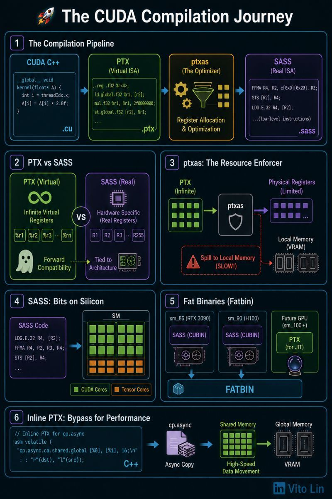

How CUDA is executed by the GPU
Between your .cu file and Tensor Cores, there is a high-stakes translation task happening inside the compiler process.
The CUDA compilation pipeline
Code goes through a multi-stage transformation:
CUDA C++ → PTX (Virtual ISA) → ptxas (the optimizer) → SASS (Real ISA)
Each step can either preserve your performance or destroy it through register spilling: too many variables means registers overflow, so data spills into local memory, and performance drops.
PTX: the virtual ISA layer
PTX (Parallel Thread Execution) is a virtual ISA.
- It uses infinite virtual registers (
%r1,%r2, ...). - It acts as a stable contract: write once in PTX, and it can run on future GPU generations with high compatibility.
- It's the "LLVM IR" of the NVIDIA world.
ptxas: the resource enforcer
This is where the real drama happens. ptxas takes the infinite world of PTX and squeezes it into the finite physical world of the SM.
- Register allocation. It maps those infinite
%rregisters to the 255 physical registers available per thread. - The danger zone. If your kernel is too complex,
ptxastriggers register spilling, moving data to slow local memory (VRAM), which leads to bad performance.
SASS: the real ISA layer
SASS (Streaming Assembler) is the real ISA that the hardware actually executes. Unlike PTX, SASS is specific to your GPU architecture (e.g., sm_90 for Hopper).
SASS contains low-level scheduling hints and hard-coded register assignments. You can see it yourself with cuobjdump -sass.
Why "fat binaries" matter
To make software work on both an RTX 3090 and an H100, NVIDIA uses fatbins. A fatbin stores:
- Multiple CUBINs (pre-compiled SASS for specific GPU versions).
- The PTX source (for JIT compilation on future GPUs).
This makes sure a model doesn't break when a new GPU architecture is released.
The hidden optimization: inline PTX
Sometimes the nvcc compiler is too conservative, so power users inject inline PTX directly into C++ to trigger specific hardware features like cp.async (async copy) or Tensor Core MMA instructions. This bypasses high-level abstractions to talk directly to the hardware's capabilities.
Key insight
GPU performance isn't just about the algorithms you write in C++ — it's about how gracefully those algorithms survive the translation from virtual PTX to physical SASS.
